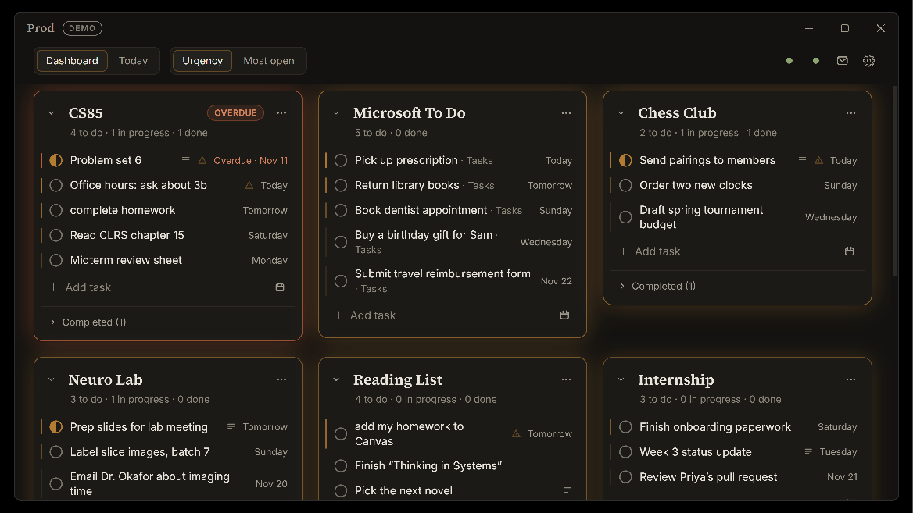

Sorting and the task drawer
Flip between Urgency and Most open, and tiles glide to their new positions. Opening a task shows its status, due date, note, and the linked Google Calendar block.

Prod is a personal productivity desktop app that I use every day. Most to-do apps sort by urgency and separate many lists, so whatever is most pressing buries everything else and the context of each list is lost. In Prod, every class, club, and project keeps a permanent dashboard tile. Urgency changes a tile's order and glow, never whether you can see it.
Each project gets its own permanent tile, and the tasks it owns live inside it, so every task keeps its context. A glow carries the urgency, fading from "today" through "later" to "none", with red-orange for overdue tasks. Tiles glide to new positions as things change.
Flip between Urgency and Most open, and tiles glide to their new positions. Opening a task shows its status, due date, note, and the linked Google Calendar block.
A global hotkey opens a capture box from anywhere. It parses the project and due date as you type, for example complete homework #cs85 tomorrow.
What needs attention, the day's scheduled calendar blocks, and anything due today with no time set aside, all in one list.
Add your own Google Cloud credentials in Settings, then sign in through the browser. Prod creates a dedicated "Prod" calendar and asks only for the narrowest permission it needs. Google shows an "unverified app" screen because the app is in testing mode.
Adding a task with a due date from the command palette creates a one-hour block in Google Calendar, which stays in sync if you drag it.
A tile glows by its most urgent open task: T0 is due today, T1 tomorrow, up to T5 at five days out. Later is six or more days, and Overdue turns red-orange. Tiles reorder with animation, with two sort modes: Urgency and Most open.
A global quick-add hotkey, a Ctrl+K-style command palette, and a Today view. Prod can run in the background from the tray.
Three task states, due dates, notes, undo-delete, and completed tasks that auto-clear after 24 hours.
| Integration | What it does |
|---|---|
| Google Calendar | Auto-creates a one-hour block on a dedicated "Prod" calendar, titled [Project] Task. Blocks you drag around sync back, with a warning if one lands after the due date or has already passed. Changes queue offline and sync upon reconnecting. It requests the least-invasive Google permission available. |
| Microsoft Azure (To Do) | The "Planned" view becomes a tile ranked by the same rules as everything else. You can complete and add tasks, and sign-in happens in your browser. |
| SMTP Email digest | One button emails a snapshot of every tile. An attached HTML checklist remembers your ticks locally, so it works on a phone without anything syncing back. |
Each integration is optional.
Prod is Windows-only for now and the installer is unsigned. Google sign-ins are in testing mode, so they expire weekly. The next step is a web portal that syncs with the desktop app to be accessed off-device.